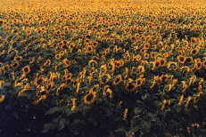
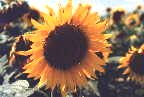

Il miele di girasole si caratterizza per il sapore dolce, di vegetale. Cristallizza spontaneamente in breve tempo.Il colore è caratteristico, giallo intenso.

La medicina popolare indica questo miele adatto per mantenere basso il livello di colesterolo nel sangue.